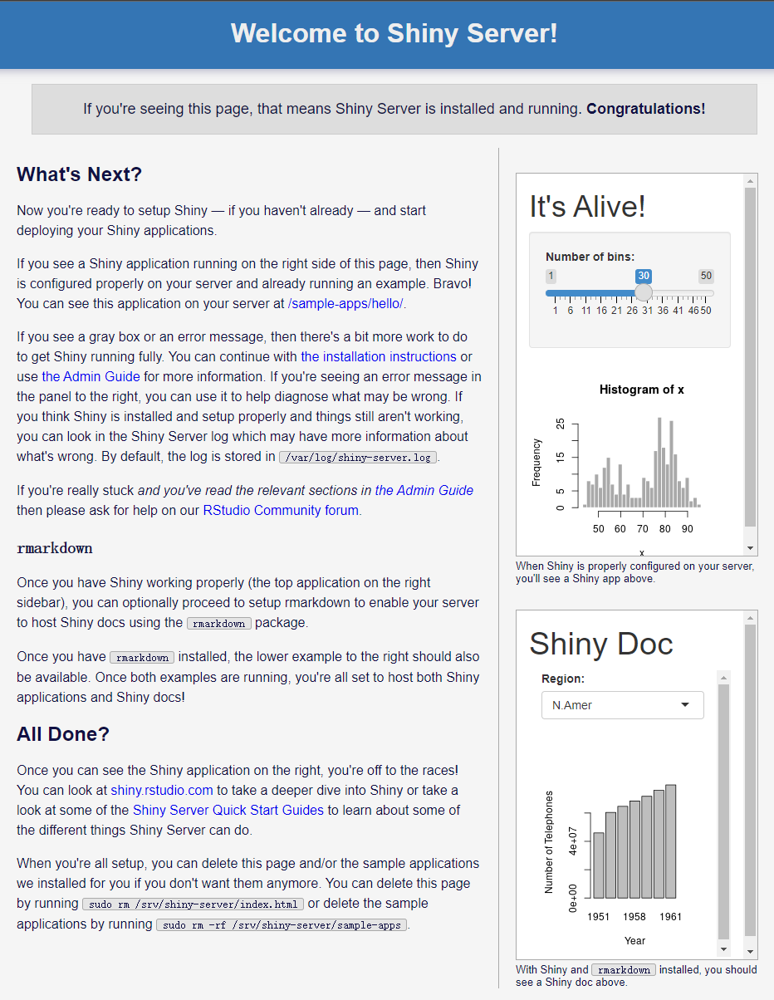
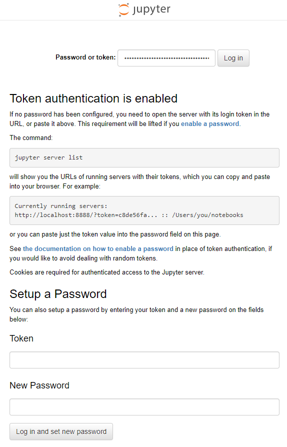

Chapter 2 Elastic Compute Cloud
Getting Started with Amazon EC2
2.1 Docker
Install Docker Engine on Ubuntu
# Update the apt package index and install packages to allow apt to use a repository over HTTPS:
sudo apt-get update
sudo apt-get install -y ca-certificates curl gnupg lsb-release
# Add Docker’s official GPG key:
curl -fsSL https://download.docker.com/linux/ubuntu/gpg | \
sudo gpg --dearmor -o /usr/share/keyrings/docker-archive-keyring.gpg
# Use the following command to set up the stable repository.
echo "deb [arch=$(dpkg --print-architecture) \
signed-by=/usr/share/keyrings/docker-archive-keyring.gpg] \
https://download.docker.com/linux/ubuntu $(lsb_release -cs) stable" | \
sudo tee /etc/apt/sources.list.d/docker.list > /dev/null
# Update the apt package index, and install the latest version of Docker Engine, containerd, and Docker Compose.
sudo apt-get update
sudo apt-get install -y docker-ce docker-ce-cli containerd.io docker-compose-plugin
# Add your user to the docker group.
sudo usermod -aG docker $USER
# Run the following command to activate the changes to groups:
newgrp docker
# Verify that you can run docker commands without sudo.
docker run hello-world2.2 RStudio
docker run -d -p 8787:8787 -e ROOT=TRUE -e PASSWORD=yourpasswordhere rocker/rstudiohttp://<public-ip-address>:8787

2.3 Shiny
docker run -d -p 3838:3838 rocker/shinyhttp://<public-ip-address>:3838

2.4 Jupyter
docker run -d -p 8888:8888 jupyter/datascience-notebookhttp://<public-ip-address>:8888
